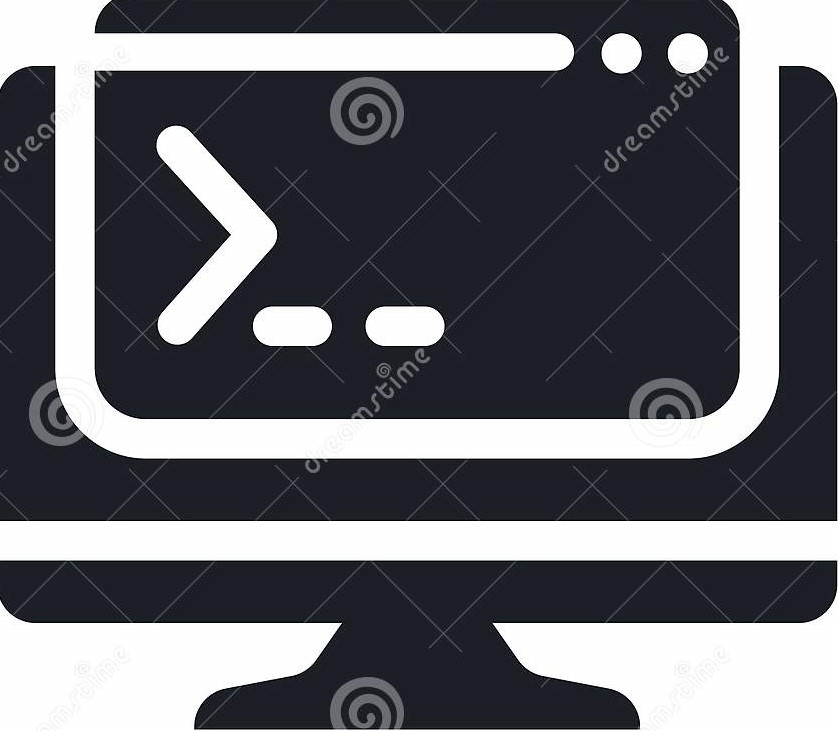

Editor de texto
- Visual studio code
Plugins / Extensiones
- Angular 2 TypeScript Emmet
- Angular Language Service
- Angular v5 Snippets
- Angular2-inline
- Bootstrap 4 & Font Awesome snippets
- HTML CSS Support
- JavaScript (ES6) code snippets
- JS-CSS-HTML Formatter
- JSHint
- Material Icon Theme
- Prettier – Code Formatter
- Terminal
- TSLint
- TypeScript Hero
- TypeScript Importer
- Sublime text
- Atom
Plugins / Extensiones
- Angular 2 Type Script Snippets
- Atom Bootstrap3
- Atom Typescript
- File Icons
- Platformio Ide Terminal
- V Bootstrap4
- Pspad
- Vim (Sin interfaz gráfica)